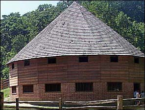
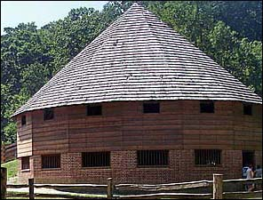

Farming
Mount Vernon was a working farm. That means a lot of food was grown and gathered right outside Washington’s door! Slaves worked the land to grow fruits, vegetables and--most of all--grains, like wheat and corn. These grains were ground into flour and used for baking. Depending on the time of year, all these foods could be seen growing in the gardens and fields.
But a lot could go wrong! Farming, like today, was a tricky business. Sometimes, bad weather or insects ruined the crops. In the 1780s, Washington was worried he would not have enough food for his family and slaves when his corn was destroyed. Since farming produced most of the food at Mount Vernon, even wealthy men like Washington had to worry about not having enough food if farming went badly.
Despite this, Washington loved farming more than anything else. He knew farming would be important to his new county, the United States of America.→